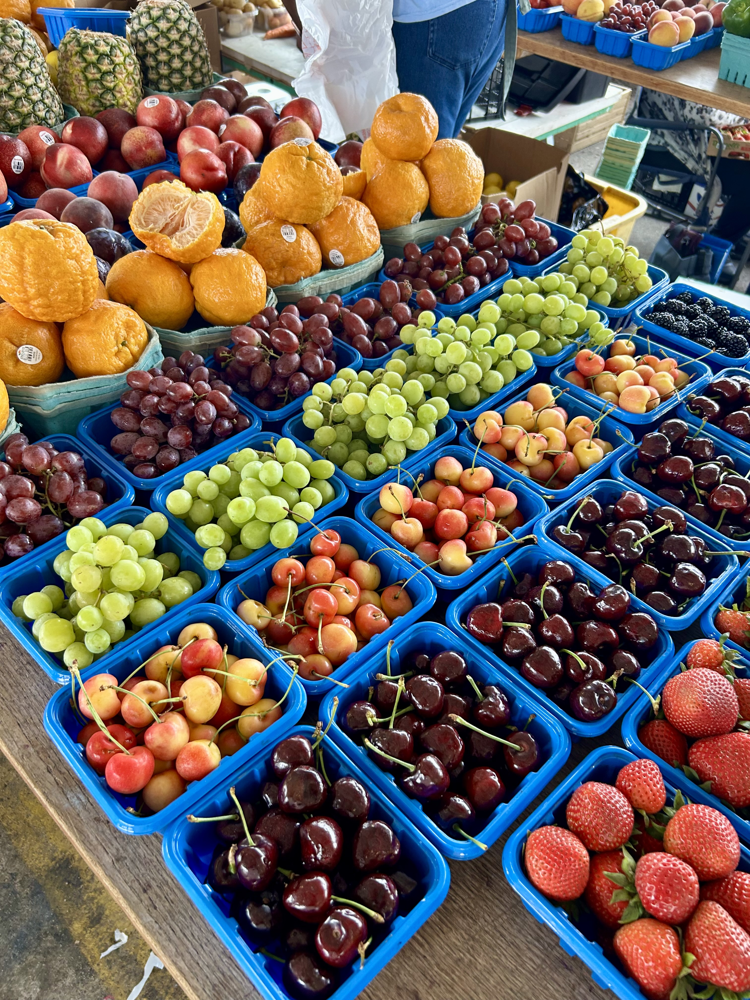

Markets
Whether it is a flea, farmers', fall, or Christmas market, visiting markets is one of my favorite weekend activities. I love exploring local produce, handmade goods, and enjoying the vibrant atmosphere. It's a great way to support local farmers and artisans while discovering fresh, fun, and new ingredients for my cooking. Being able to interact with vendors and learn about their products adds a personal touch to the experience.